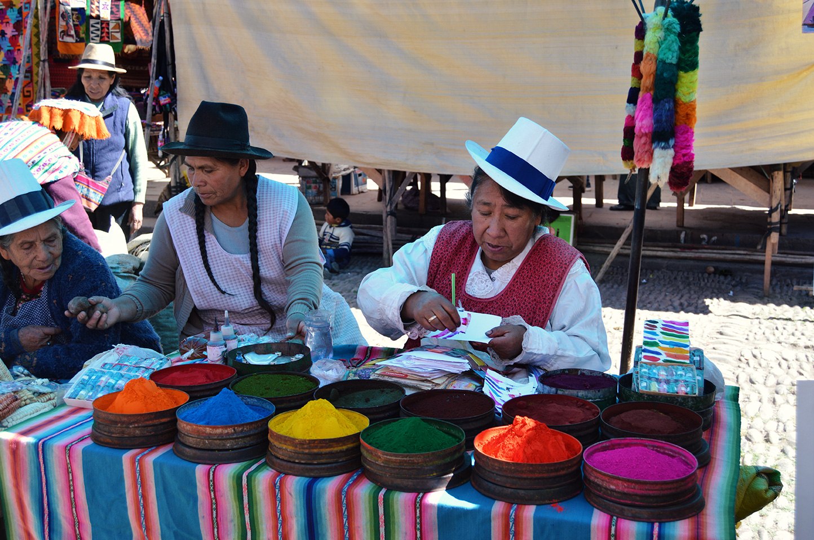

Exploring Peru
Macchu Picchu ****
Antigua Guatemala is a charming city in Central America. It's famous for its old, colorful buildings and cobblestone streets. The city has lots of history because it was once the capital of Guatemala. You can see beautiful churches and ruins from the past. Many people visit Antigua to enjoy its relaxed atmosphere, delicious food, and vibrant culture. It's a lovely place to explore and experience a bit of Guatemala's rich heritage.


// Pachamama-Mother Earth - Thank her and ask for her blessings in ceremonies with offerings like food and flowers. Pachamama is an important part of Peruvian culture and a way to show respect for the Earth and its gifts.
Cusco ****
Cusco is a special city in Peru. It was the capital of the Inca Empire a long time ago. Now, lots of people visit Cusco to see its old buildings and learn about Inca history. The city is high in the mountains and has colorful markets and friendly people. It's a cool place to explore and enjoy the culture of Peru.
//People have been living in Cusco for thousands of years, and it was the heart of the Inca Empire, making it a place rich in history and culture.
Lima ****
Lima is the capital city of Peru. It's a big and bustling place with lots of people and traffic. Lima is near the ocean, so it has beautiful beaches where people like to swim and surf. The city is known for its delicious food, especially dishes like ceviche and Lomo Saltado. Lima is also full of history, with old buildings and museums to explore. It's a lively and colorful city that many visitors enjoy.

//Ceviche is a tasty dish from Peru. It's made with fresh fish or seafood that's "cooked" in citrus juices like lemon or lime. The acid from the juice makes the fish turn white and firm, kind of like it's been cooked with heat. It's a popular and zesty treat!
Sacred Valley ****
The Sacred Valley is a special place in Peru. It's a valley with tall mountains and a river running through it. Long ago, the Inca people lived there and grew their crops. Today, it's a great place to see Inca ruins and beautiful landscapes. Many travelers visit the Sacred Valley to explore its history and enjoy its natural beauty.

// Llamas have cultural and spiritual significance in Andean cultures. They are sometimes used in religious ceremonies and festivals and are considered symbols of strength and resilience.
My favorite spots:
- Inca Trail
- Lake Titicac homestay
- Birdwatching at the Colca Canyon
- The Inca Market